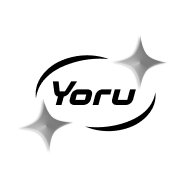
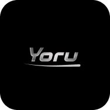
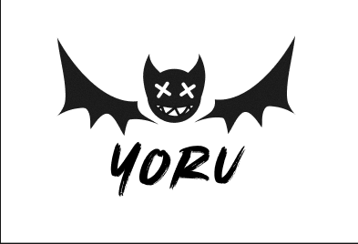
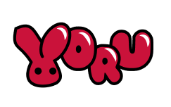

Yoru
Yoru est une nouvelle marque de streetwear destinée à une clientèle jeune, urbaine et tendance. La marque se veut audacieuse, moderne et rebelle, tout en restant minimaliste et identifiable.
Déclinaison Graphique

Variante du Logo sur fond sombreMaquette Textile

Pistes Graphiques Explorées

Idée explorée (Symbole)
Idée explorée (Typographie)Notes sur le projet
Yoru est un projet fictif réalisé lors d’une immersion professionnelle, dédié à la création de l’identité visuelle d’une marque de vêtements à l’univers urbain. L’objectif était de concevoir un logo iconique, facilement identifiable et déclinable, aussi bien en typographie seule qu’avec un symbole.
Réalisé en autonomie avec des retours réguliers, le projet s’est concentré sur la recherche et la conception du logo, ainsi que sur la création de mockups permettant d’explorer son application dans différents contextes. La direction artistique s’inspire d’une esthétique urbaine et énergique, influencée par les années 2000, tout en respectant des contraintes de minimalisme et d’impact visuel.
Ce projet m’a permis de travailler sur la force d’une identité graphique, la lisibilité d’une typographie marquée et la diversité des propositions, tout en conservant une cohérence visuelle forte.